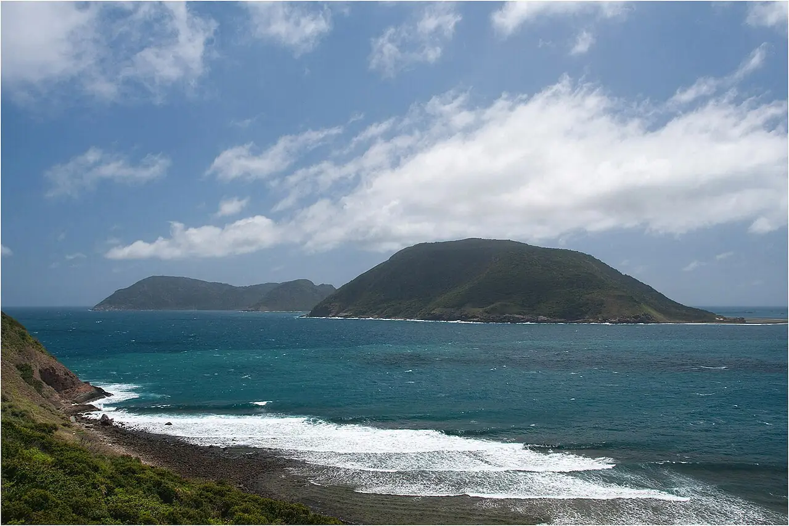

Côn Đảo — Hòn Bảy Cạnh
Côn Đảo, Vietnam · plongée, snorkeling

Archipel protégé par un parc national au large du delta du Mékong. Autour de Hòn Bảy Cạnh, récifs coralliens et plages de ponte des tortues vertes se découvrent avec des opérateurs autorisés.
- Lieu
- Côn Đảo, Vietnam
- Niveau
- Intermédiaire
- Activités
- plongée, snorkeling
- Type d'eau
- Mer / océan
- Coordonnées
- 8.67, 106.69 (position approximative du secteur)
Dangers à connaître
- Mer agitée pendant la mousson de nord-est, en fin d’année.
- Parc national : prélèvements interdits, accès à certaines îles soumis à autorisation.
Le conseil d'Ocean Buddy
Les îles du parc sont réglementées : réserve plongée ou excursion auprès d’un opérateur agréé à Côn Sơn.
Ouvrir dans Ocean Buddy Télécharger sur l'App Store
Source : Fiche Ocean Buddy · septembre 2026 · à vérifier localement.